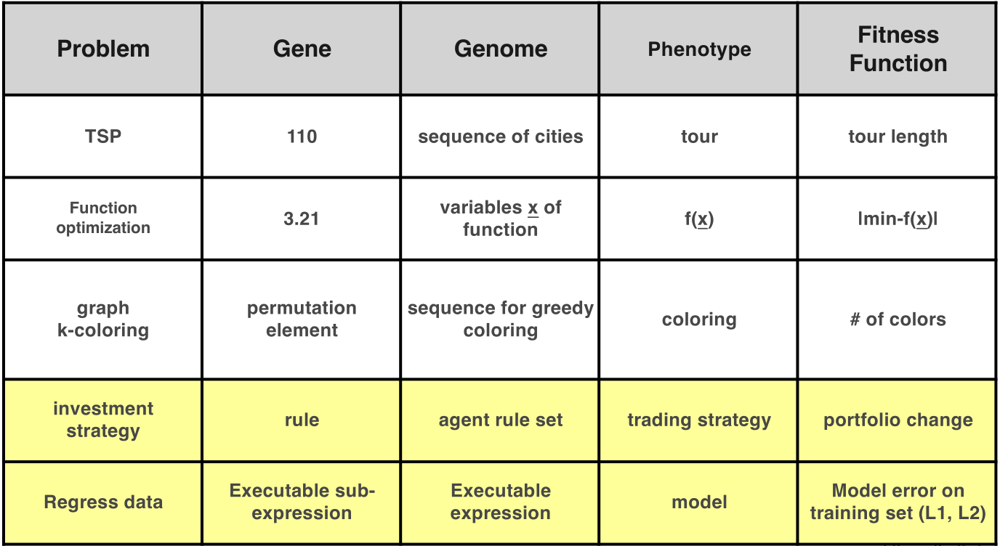
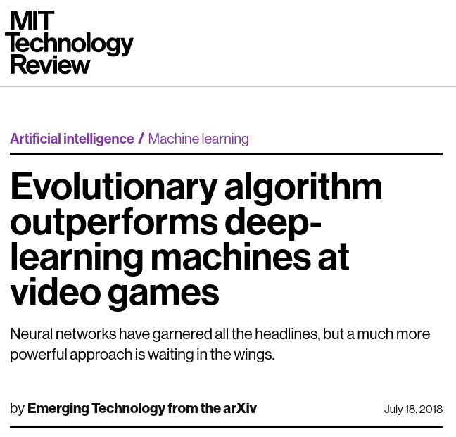
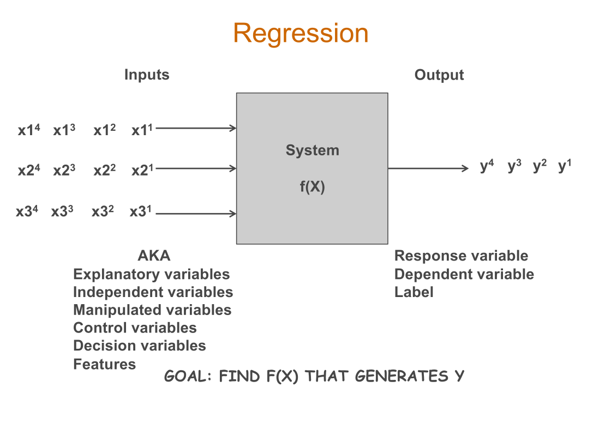
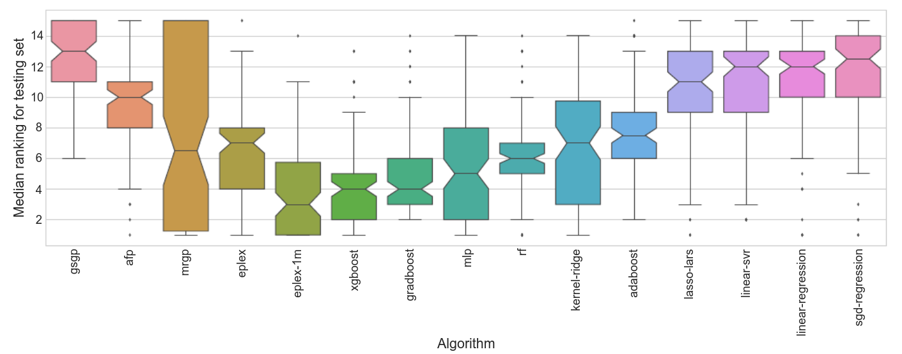
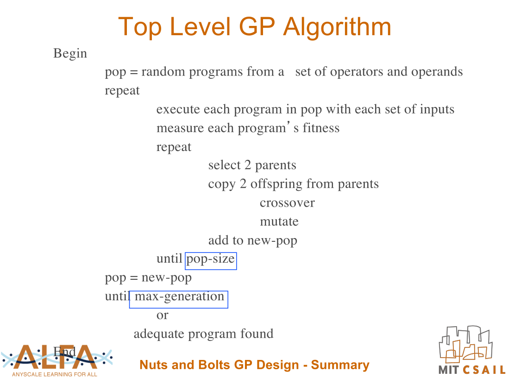
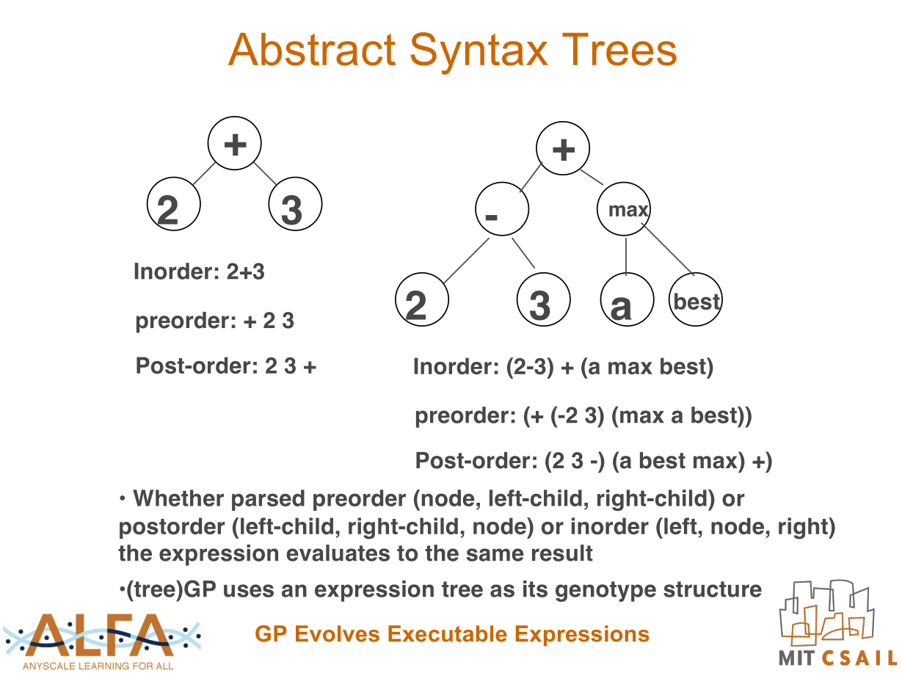
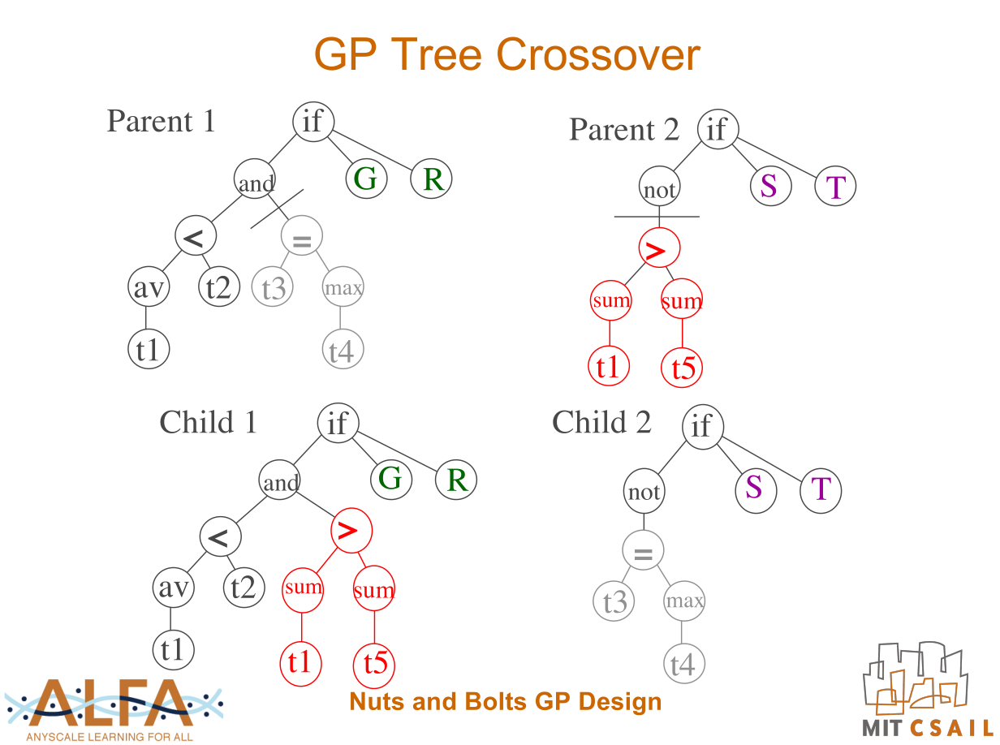
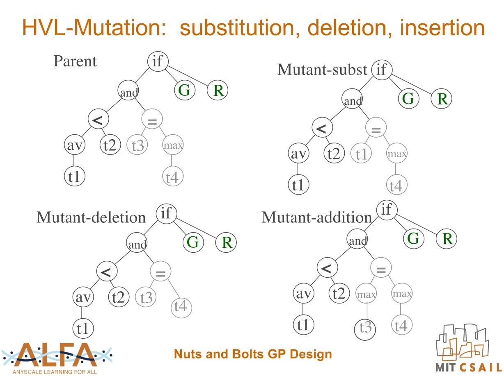
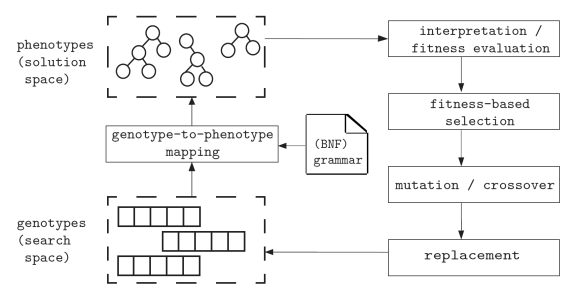

Evolutionary Computation
Evolution of Programs, Graphs, and Networks
Outline
- 4.1 Evolving programs
- GP Overview
- Abstract Syntax Trees
- Other forms of Genetic Programming
- 4.2 Evolving Graphs with CGP
- 4.3 Evolving Neural Networks
genetic-programming.org
Automatic Programming
How can computers learn to solve problems without being explicitly programmed? In other words, how can computers be made to do what is needed to be done, without being told exactly how to do it?
Attributed to Arthur Samuel, 1950s
Koza, John R., and John R. Koza. Genetic programming: on the programming of computers by means of natural selection. Vol. 1. MIT press, 1992.
Attributed to Arthur Samuel, 1950s
Koza, John R., and John R. Koza. Genetic programming: on the programming of computers by means of natural selection. Vol. 1. MIT press, 1992.
Genetic Programming

O'Reilly, Una-May, and Erik Hemberg. "Introduction to genetic programming." Proceedings of the Genetic and Evolutionary Computation Conference Companion. 2019.
Genetic Programming
- Koza, John R. 1989. Hierarchical genetic algorithms operating on populations of computer programs. In Proceedings of the 11th International Joint Conference on Artificial Intelligence. San Mateo, CA: Morgan Kaufmann. Volume I. Pages 768-774.
- Koza, John R., Genetic programming: on the programming of computers by means of natural selection. Vol. 1. MIT press, 1992.
- Kinnear, K. E., Langdon, W. B., Spector, L., Angeline, P. J., & O'Reilly, U. M. (Eds.). (1994). Advances in genetic programming. MIT press.
- Koza, John R., et al., eds. Genetic Programming: proceedings of the first annual conference. Mit Press, 1996.
- Banzhaf, Wolfgang, et al. "Genetic Programming — An Introduction: On the Automatic Evolution of Computer Programs and Its Applications." Morgan Kaufmann Publishers. Inc., San Francisco, California (1998).
- Current conferences: GECCO, EuroGP, GPTP
Genetic Programming

Genetic Programming

O'Reilly, Una-May, and Erik Hemberg. "Introduction to genetic programming." Proceedings of the Genetic and Evolutionary Computation Conference Companion. 2019.
Symbolic Regression

La Cava, William, et al. "Multidimensional genetic programming for multiclass classification." Swarm and evolutionary computation 44 (2019): 260-272.
GP Outline

O'Reilly, Una-May, and Erik Hemberg. "Introduction to genetic programming." Proceedings of the Genetic and Evolutionary Computation Conference Companion. 2019.
GP Outline

In genetic programming, genomes are interpreted to create programs which are executed to determine fitness
Abstract Syntaxt Trees

O'Reilly, Una-May, and Erik Hemberg. "Introduction to genetic programming." Proceedings of the Genetic and Evolutionary Computation Conference Companion. 2019.
AST Crossover

O'Reilly, Una-May, and Erik Hemberg. "Introduction to genetic programming." Proceedings of the Genetic and Evolutionary Computation Conference Companion. 2019.
AST Mutation

O'Reilly, Una-May, and Erik Hemberg. "Introduction to genetic programming." Proceedings of the Genetic and Evolutionary Computation Conference Companion. 2019.
Genetic Programming Representations
- Abstract Syntax Trees (LISP GP)
- Graphs (CGP, TPG)
- Instruction sequences (Linear GP)
- Grammars (grammatical evolution)
- Stacks (PushGP)

Heuristics Lab